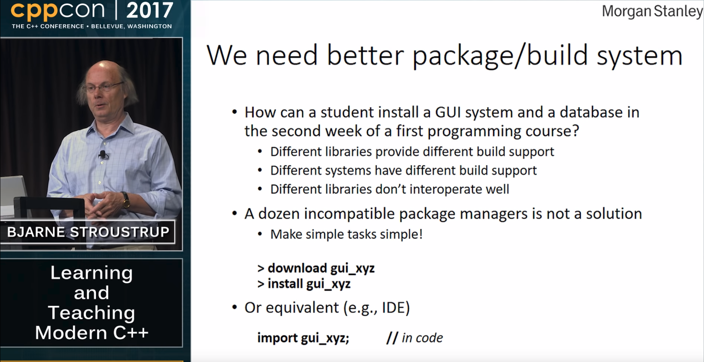
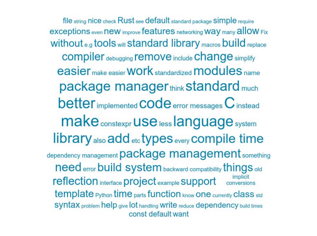
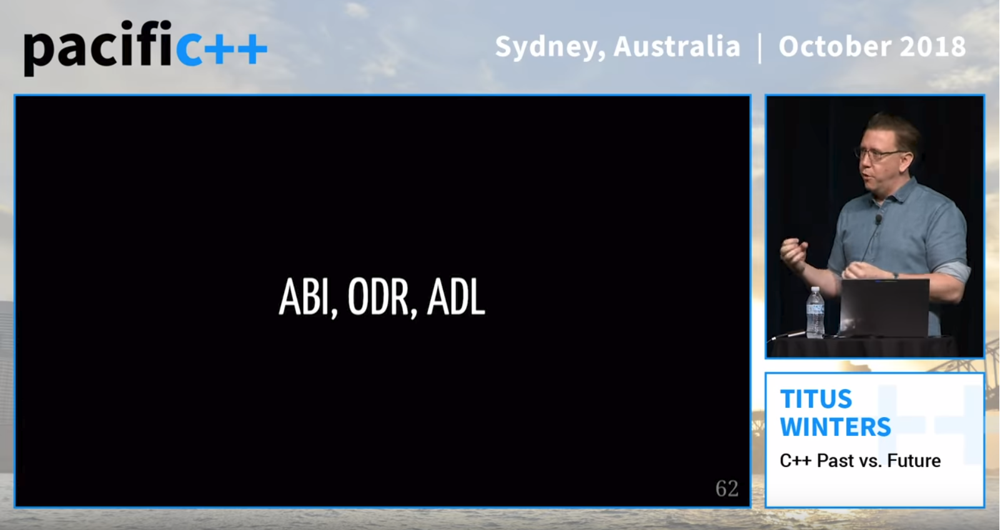
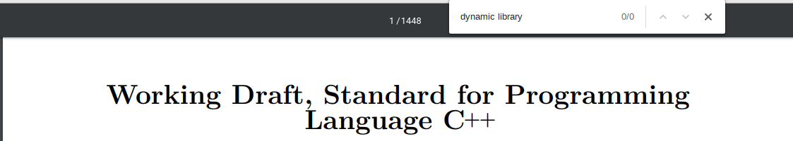
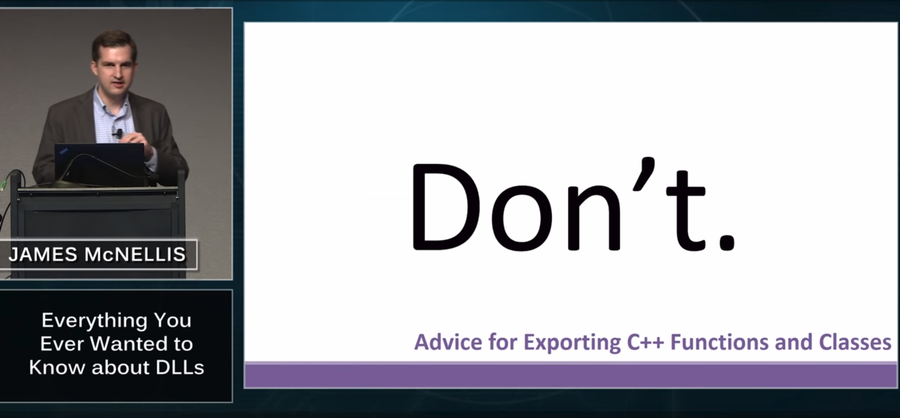
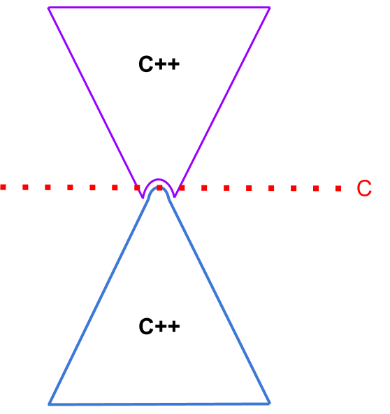
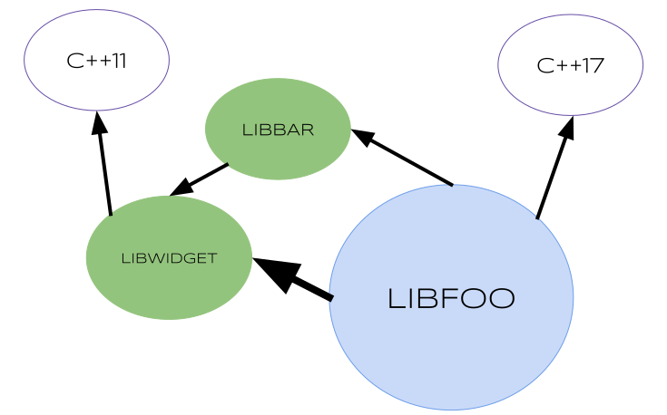
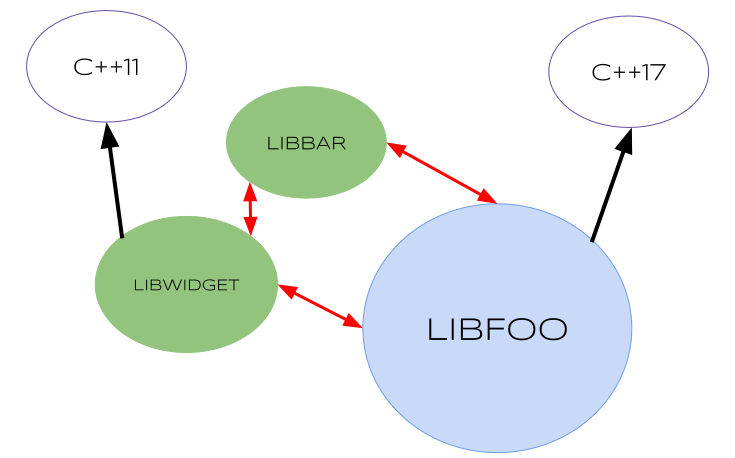

Dependency management
At the end of the rainbow
Let's talk about a language that doesn't suck
npm
Javascript Package Manager
Node Package Manager
npm install request
fetch a package called request
The left-pad incident
A package to add padding to a string
Removed by its author
Internet BROKE
Lessons Learned by the JS community
- Published dependencies should be immutable
- Pin your dependencies
Unfortunately
Internet was fixed
In the C++ community, we were slightly amused
- It would never happen to us, we are superior beings
- Too busy working on the latest command line parser ?
- left-pad is trivially implementable
auto left_pad(std::string_view str, int n, char fill = ' ') {
auto padded = right_pad(str, n, fill);
std::rotate(padded.begin(),
padded.begin() + str.size(),
padded.end());
return padded;
}
That's a rotate!
- Made by a junior developer
- No existing functionality
-
left-pad/index.jsfunction leftPad (str, len){ var i = -1; len = len - str.length; while (++i < len) { str = ' ' + str; } return str; } - Wrote tests
- Made the code available for other people to use
So, left pad?
How long would it take you to write an implementation that is:
- Correct
- Tested
- Efficient
- Reusable
npm install left-pad takes a few seconds
Package Managers
Package Managers (npm cargo, pip, etc) are tools that allow to consumme and produce sharable code trivially
- Frictionless
- Allow people to focus on the important parts of their software
- At the center of a thriving ecosystem
- Easier to contribute to other people's projects
Package Managers
- With great power comes a new class of issues
- Micro packages are inevitable
- Dependencies are about trust
- Developer are ultimately responsible of all their dependencies, transitively
C++ developers are not superior beings
We just have terrible tools
Dependency management
At the end of the rainbow
At the end of the rainbow
At the end of the rainbow
At the end of the rainbow
Can we make Cargo in C++ ?
Can we make Cargo in C++ ?
This is not a talk about code
This is not a talk about code
This is not a talk about tools
I have nothing to talk about
C++ Ecosystem
We have to talk about everything
What is a
dependency ?
The stuffs needed by a program
What is a
C++ program ?
- A collection of libraries ?
- A collection of symbols ?
What does the standard say ?
A program consists of [...] translation units linked together.
The text of the program is kept in units called source files [...].
A source file together with all the headers [...] is called a translation unit.
What is a
C++ program ?
- A collection of libraries ?
- A collection of symbols ?
- A collection of translation units ?
Libraries don't exist
The standard says nothing neither dynamic or static libraries
A program consists of one or more translation units linked together.
Header files
- Copy pasted
- Unbounded
- Implementation not tied to interface
- Not dependable
A module unit is a translation unit [...]
Use modules
🦄 A program consists of module units linked together. 🦄
- Bounded
- Consistent interface across the entire program
- ➥ Less ODR violations
- More tracktable
A translation unit consists of a sequence of declarations.
A declaration is said to be a definition of each entity that it defines.
Every program shall contain exactly one definition of every [...] function or variable that is odr-used in that program outside of a discarded statement.
boost::asio::tcp::socket socket(...);
asio.lib
tcp.o
tcp.cppm
module boost.asio.tcp;
boost::asio::tcp
socket
Most software today is very much like an Egyptian pyramid with millions of bricks piled on top of each other, with no structural integrity, but just done by brute force and thousands of slaves.
- Compilers
- Build Systems
- Meta Build Systems
- Meta Meta Build Systems
- Loaders
- Package Managers
- Package Managers Managers
What's a C++ program ?
- Libraries ?
- Symbols ?
- Translation units ?
- Definitions
What is a C++ program ?
Dependency Graphs

Exponential Complexity

- Same ?
- ❝Compatible❞ ?
- Malware ?
- Evolution ?
libfooSystem A (Development)
libfooSystem B (Deployment)
So you use system provided libraries?
- Tied to the deployment platform
- ABI
- Tied to the platform compiler
- Live at tail
ABI
Use C

Use C
COM, D-Bus, IPC,...
Shared libraries can be useful...
(...as long as you don't share them)
The Configuration step of build system
The problem with Configuration
find_package(boost::thread)What does boost::thread mean ?
They know where they are
Dependency management is about sharing a common understanding of names
Take control over your environment
Be the environment
Build
the world
from source
In a consistent environmentHave source dependencies ✱
(✱ if you need them)
Be assertive about it
No conditional dependencies
Avoid using the system package manager
Do not bundle your dependencies
Use a package manager
(like vcpkg)
Header only libraries
templateconcept/ Generic programminginlineautodeduced return typeconstexpr/consteval- Reflection
Modern C++ really wants to be built from source
Yet we make our tools blind
- No access to the sources
- Save memory
- C++ is slow to compile
C++
isslow to compile
C++
haszero cost abstractions
Compile times matter
Improving c++ compile times
- Throw hardware at it
- Faster compilers and linkers (lld, link.exe)
Improving c++ compile times
Build AS-IF from source
- Cache Translation units (ccache)
- Cache Interfaces (modules)
- Cache template instantiations ?
Improving c++ compile times
- Modules
- "Module Interface only libraries"
- Improved tools
- Caching
Is that fast enough?
Do nothing
∞- Text/Unicode
- 2 regex engines
- Json
- XML
- Events
- Geometry
- Concurrency
- Dates/timezones
- Containers
- IO/Filesystem
Write
small libraries
(one library per build script)Libraries are logical units
--
Small libraries
are more easily
- Reusable
- Maintainable
- Composable
Don't pay for what you don't use
We end up with a lot of libraries and we hate our life
The C++ Library-ing language
The C++ Library-ing language
We only care about programs
Compiler flags
No Raw Compiler Flags
Libraries should only have requirements and dependencies
Libraries should only have requirements and dependencies
Use toolchain files
Describe the tools (compiler, linker, etc) and their flagscmake -DCMAKE_TOOLCHAIN_FILE=msvc-x64.cmake
Don't
- Have global state
- Try to detect the environment
- Express anything but requirements and dependencies
- Express negatives requirements (such as no exceptions)
Prefer expressing semantics in C++ code!
#include <iostream>
int main() {
std::cout << "Hello Word\n";
}
How many C++ programs on this slide?
- 0 (never expand to a valid program)
- 1

#include <iostream>
int main() {
std::cout << "Hello Word\n";
}
How many C++ programs on this slide ?
0 - 2 550
npm install lodash-modularized
+ lodash-modularized@0.0.2
added 197 packages from 6 contributors
and audited 1459 packages in 32.069s
#include <iostream>
int main() {
std::cout << "Hello Word\n";
}
fill_buffer();
// flush_buffer(); //Only useful on the zx spectrum, I think
write_next_line();
fill_buffer();
#ifdef 0
flush_buffer();
#endif
write_next_line();
fill_buffer();
#ifdef COMMODORE64
flush_buffer();
#endif
write_next_line();
fill_buffer();
#ifdef __linux__
flush_buffer();
#endif
write_next_line();
#ifdef __linux__
#define LPCTSTR const char*
#endif
HANDLE open_file(LPCTSTR fileename) {
#ifdef DEBUG
log("Opening {}", fileename);
#endif
#ifdef WIN32
return CreateFile(fileename,
GENERIC_READ, FILE_SHARE_READ,
nullptr, OPEN_ALWAYS,
FILE_ATTRIBUTE_NORMAL, nullptr);
#elif __linux__
return open(fileename, O_RDONLY);
#else
#error "Platform not supported"
#endif
}
#ifdef __linux__
#define LPCTSTR const char*
#endif
HANDLE open_file(LPCTSTR filename) {
#ifdef DEBUG
log("Opening {}", fileename);
#endif
#ifdef WIN32
return CreateFile(filename,
GENERIC_READ, FILE_SHARE_READ,
nullptr, OPEN_ALWAYS,
FILE_ATTRIBUTE_NORMAL, nullptr);
#elif __linux__
return open(fileename, O_RDONLY);
#else
#error "Platform not supported"
#endif
}
#ifdef __linux__
#define LPCTSTR const char*
#endif
HANDLE open_file(LPCTSTR filename) {
#ifdef WIN32
return CreateFile(filename,
GENERIC_READ, FILE_SHARE_READ,
nullptr, OPEN_ALWAYS,
FILE_ATTRIBUTE_NORMAL, nullptr);
#elif __linux__
return open(fileename, O_RDONLY);
#else
#error "Platform not supported"
#endif
}
HANDLE open_file(LPCTSTR filename) {
return CreateFile(filename,
GENERIC_READ, FILE_SHARE_READ,
nullptr, OPEN_ALWAYS,
FILE_ATTRIBUTE_NORMAL, nullptr);
}
void* open_file(const char* filename) {
return CreateFileA(filename,
GENERIC_READ, FILE_SHARE_READ,
nullptr, OPEN_ALWAYS,
FILE_ATTRIBUTE_NORMAL, nullptr);
}
Portability in C++: achieved by hidding code from our compilers and tools
- ❝Portable❞ code is in fact not portable
- System programming is not dependable
- Can we do better?
??? open_file(const char* name) {
if constexpr (???) {
return CreateFileA(name,
GENERIC_READ,
FILE_SHARE_READ,
nullptr,
OPEN_ALWAYS,
FILE_ATTRIBUTE_NORMAL,
nullptr);
}
else if constexpr (???) {
return open(name, O_CREAT | O_RDONLY);
}
static_assert(???, "Platform not supported");
}
export module cor3ntin.sys_info;
export namespace cor3ntin::sys_info {
#ifdef WIN32
constexpr bool is_win32 = true;
#else
constexpr bool is_win32 = false;
#endif
#ifdef __unix__
constexpr bool is_posix = true;
#else
constexpr bool is_posix = false;
#endif
}
import cor3ntin.sys_info;
??? open_file(const char* name) {
using namespace cor3ntin;
if constexpr (sys_info::is_win32) {
return CreateFileA(name,
GENERIC_READ,
FILE_SHARE_READ,
nullptr,
OPEN_ALWAYS,
FILE_ATTRIBUTE_NORMAL,
nullptr);
}
else if constexpr (sys_info::is_posix) {
return open(name, O_CREAT | O_RDONLY);
}
static_assert(sys_info::is_posix || sys_info::is_win32,
"Platform not supported");
}
using native_handle =
std::conditional_t <
sys_info::is_win32,
void* ,
int
> ;
import cor3ntin.sys_info;
native_handle open_file(const char* name) {
using namespace cor3ntin;
if constexpr (sys_info::is_win32) {
return CreateFileA(name,
GENERIC_READ,
FILE_SHARE_READ,
nullptr,
OPEN_ALWAYS,
FILE_ATTRIBUTE_NORMAL,
nullptr);
}
else if constexpr (sys_info::is_posix) {
return open(name, O_CREAT | O_RDONLY);
}
static_assert(sys_info::is_posix || sys_info::is_win32,
"Platform not supported");
}
export module cor3ntin.posix;
export namespace cor3ntin::posix {
int open(const char *path, int oflag);
}
#define to declare constants.
O_RDONLY
module;
#ifdef __unix__
# include <fcntl.h>
#endif
export module cor3ntin.posix;
export namespace cor3ntin::posix {
int open(const char *path, int oflag);
#ifdef O_RDONLY
#define __O_RDONLY O_RDONLY
# undef O_RDONLY
constexpr int O_RDONLY = __O_RDONLY;
# undef __O_RDONLY
#else
constexpr int O_RDONLY = -1;
#endif
}
#ifdef __linux__
#include <sys/stat.h>
#include <fcntl.h>
#endif
module cor3ntin.posix;
#ifdef __linux__
namespace cor3ntin::posix {
int open(const char *path, int oflag) {
return ::open(path, oflag);
}
}
#endif
import <type_traits>
import cor3ntin.posix;
import cor3ntin.win32;
import cor3ntin.sys_info;
export module cor3ntin.io;
export namespace cor3ntin::io {
using native_handle = std::conditional_t <sys_info::is_win32,
void*, int>;
native_handle open_file(const char* name) {
using namespace cor3ntin;
if constexpr (sys_info::is_win32) {
return win32::CreateFileA(name, /*...*/);
}
else if constexpr (sys_info::is_posix) {
return posix::open(name, posix::O_CREAT | posix::O_RDONLY);
}
static_assert(sys_info::is_posix || sys_info::is_win32,
"Platform not supported");
}
}
Concepts TS - not valid C++20
native_handle
open_file(const char* name) requires sys_info::is_win32 {
using namespace cor3ntin::win32;
return CreateFileA(name, /*..*/);
}
native_handle
open_file(const char* name) requires sys_info::is_posix {
using namespace cor3ntin::posix;
return open(name, O_CREAT | O_RDONLY);
}
#[cfg(unix)]
fn open_file(name: String) {}
#[cfg(windows)]
fn open_file(name: String) {}Maybe we can borrow ideas from Rust
Scalable C
- Modules
- Namespaces
constexpr
Dependable interfaces
- Use modules and namespaces
- Avoid conditional compilation
- Provide a single interface across all platforms and environments
- Push platform specific bits to definitions and implementations files
vcpkg install windows10-sdk
On linux
What's a dependency ?
A dependency
isAn immutable set of definitions
withan universal name
A library
isa collection of modules
witha name
We don't need a package abstraction
[package]
name = "rustls"
version = "0.15.2"
edition = "2018"
description = "Rustls is a modern TLS library written in Rust."
homepage = "https://github.com/ctz/rustls"
repository = "https://github.com/ctz/rustls"
categories = ["network-programming", "cryptography"]
[dependencies]
base64 = "0.10"
log = "0.4.4"
ring = "0.16.5"
sct = "0.6.0"
webpki = "0.21.0"
Agenda
- Javascript
- The Build System Monade
- Politics
A few developers
A few thousands lines of C code
A few thousands developers
250 millions lines of C++ Code
That's Cute !

NPM > 1 Million packages
10 millions users
30 billions downloads. Per day
This is necessary to maintain the common understanding of packages names and versions
We need rules
Rule №1
Use THE tool
Single build system
Language
(npm: yarn, ied, pnpm)Use vcpkg/conan and cmake
Rule №2
Use unique names for your libraries, modules, namespaces
Respect boundaries and scopes
- SD-8
- Provide package for your own libraries
- Do not modularize other people's libraries
Dependency management is hard
- Not really a tool problem !
- Keep doing what we have been doing
- Put every single library in the standard
- Rewrite everything in rust
- Rewrite some of our tools and adapting some of our code
Dependency management
Make all the code visible to all tools
- Reliable Refactoring at scale
- Code Indexing
- Static Analysis
- Cross compilation
- Better IDE integration
- Libraries on compiler explorer
- ...
Write dependable code
- Build from source
- Use modules
- Write small modules and libraries
- Write simple stateless build scripts
- No raw compiler flags in library build scripts
- Use toolchain files
- Have unconditional dependencies
- Provide portable and unconditional interfaces
- Live near the head, we have cookies